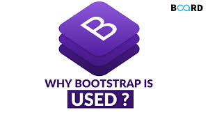

BOOTSTRAP
Bootstrap is a widely-used open-source front-end framework for web development, providing a collection of HTML, CSS, and JavaScript components and tools that enable developers to build responsive, mobile-first websites with ease.
This Bootstrap tutorial is designd for beginners and experienced professional, covering basics and advanced concepts including including working with Bootstrap’s CSS classes, incorporating JavaScript plugins, and more. This tutorial will help you with the knowledge and skills to create stunning and responsive websites.
By the end of this tutorial, you’ll have a solid understanding of Bootstrap’s capabilities and be able to apply them effectively in your web development projects.
What is Bootstrap?
BootStrap is a free and open-source tool collection for creating responsive websites and web applications. It is the most popular HTML, CSS, and JavaScript framework for developing responsive, mobile-first websites. Nowadays, the websites are perfect for all browsers (IE, Firefox, and Chrome) and for all sizes of screens (Desktop, Tablets, Phablets, and Phones). All thanks to Bootstrap developers – Mark Otto and Jacob Thornton of Twitter, though it was later declared to be an open-source project.

Why we use Bootstrap?
By using this framework we can easily manipulate the styling of any web page, like font style, text color, background color, flex, grid system, etc. Bootstrap Vesrion 4 & Vesrion 5 are the most popular versions. There are lots of other CSS frameworks like Tailwind CSS, Bulma, and Foundation but among them, this framework is the most popular because of below mentioned features:
- It is Faster and Easier way for Web-Development.
- It creates Platform-independent web-pages.
- It creates Responsive Web-pages.
- It designs responsive web pages for mobile devices too.
- It is a free and open-source framework available on www.getbootstrap.com.
Applications of Bootstrap:
1.Responsive Web Design: Bootstrap empowers developers to create websites that seamlessly adapt to different screen sizes and devices, providing a consistent and optimal user experience.
2.Mobile-First Development: Bootstrap’s mobile-first approach ensures that websites are designed and optimized for mobile devices, catering to the increasing usage of smartphones and tablets.
3.Efficient Prototyping: With its extensive collection of pre-designed components and templates, Bootstrap facilitates rapid prototyping, enabling developers to quickly create functional website layouts and UIs.
4.Consistent Cross-Browser Compatibility: Bootstrap’s standardized CSS and JavaScript codebase ensures consistent rendering and functionality across various web browsers, saving developers time and effort in browser-specific troubleshooting.
5.Customizable Themes and Styling: Bootstrap offers a wide range of customizable themes and styles, allowing developers to create visually appealing and unique designs that align with their brand or project requirements.
6.Time and Cost Efficiency: By leveraging the power of Bootstrap, developers can save significant time and effort in front-end development, resulting in faster project delivery and cost savings.